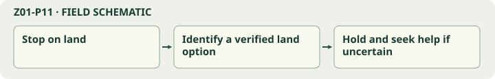

Z01-P11 · Survival fundamentals · Adapted historical material
Stop at uncertain ice
Preserve a safe land route when a winter shortcut is unverified.
When it applies · A walking party approaching a frozen lake, stream, flooded path or marsh.
Equipment · Map and sufficient insulation and time for a safe alternative.

Actions
- Stop on stable land. Ice varies across one body of water; appearance, footsteps or a nearby measurement cannot establish your crossing.[E12]
- Use a verified land route if conditions and group ability allow. If you cannot identify one, reassess time, exposure and communication from stable ground.[E12, T06, ED]
- Share your location and the changed route or hold decision. Keep the group off the uncertain surface.[T06, E12, ED]
Verify · The next segment stays on known ground and the group can describe its return option.[ED]
Stop or change course · An unverified shortcut, bridge approach or ice edge remains a stop point.[E12, ED]
Evidence and editorial notes
- E12 · Minnesota DNR · Ice Safety (current web edition)
- Section: Ice Safety > basic precautions · Conditions: Minnesota ice edges and travel routes
Support: No ice is universally safe. Strength can differ over short distances; appearance or tracks alone cannot establish a safe crossing.
Limitations: Currents, springs, snow insulation, and freeze-thaw cycles weaken ice invisibly. · Conflicting evidence: None; mandates shore-bound detour for foundational walking parties.
Editorial note: Maintains strict separation from specialized B013 ice chapters. · Specialist reviewer: Ice safety and search and rescue
Primary source · checked 2026-11-24 - T06 · NPS · Outdoor Emergency Plan (current web edition)
- Section: If you get lost or hurt; call for help · Conditions: Outdoor US emergency
Support: Communicate location, last known point, situation and needs. Stay put when unable to establish a safe route unless immediate danger requires movement.
Limitations: Cell signal is unreliable in backcountry terrain; pre-trip plans bridge communication gaps. · Conflicting evidence: None; core lost-person decision rule.
Editorial note: Foundation for stay/signal/move and dispatch handoff cards. · Specialist reviewer: Search and rescue
Primary source · checked 2026-11-24
Source lineage · B013 P01–P05 and B014 P12 · Classification · Adapted historical material.